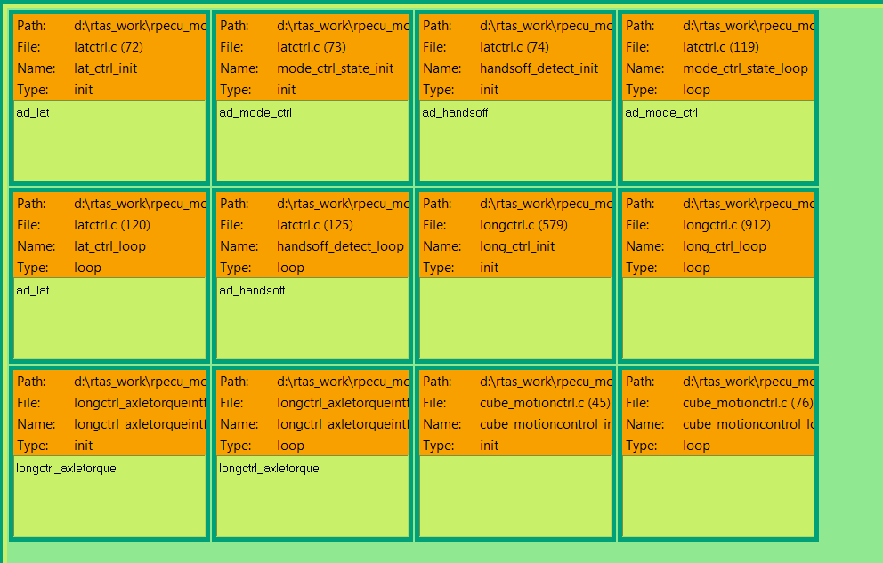

Do 05.01.2017 14:35:
Von Fabian:
der folgende Punkt betrifft wohl hauptsächlich die Modulentwickler. Für den Rest trotzdem zur Info.
Da mittlerweile doch schon einige Projekte mit der RPECU arbeiten (AD B7 & B8, Motion Control, People Mover,...) gibt es eine Vielzahl von Orten im Code an denen RTAS Module eingebunden werden können. Dies führt zu einer mittlerweile recht unübersichtlichen Konfigurationsübersicht im RTAS SSW Manager (siehe unten):

Es werden alle Code Stellen angezeigt, obwohl man gar nicht alle für das Projekt benötigt.
Matthias hat mich auf die zusätzliche Option aufmerksam gemacht, mit der man etwas Ordnung in die Konfigurationsübersicht bringen kann.
Wenn im Basis Code, der RTAS Kommentar wie folgt entsprechend erweitert wird:
/* #sswrtas: n: lat_ctrl_init, s: [default, rpecu_ad_b7, rpecu_ad_b8, rpecu_ad_demo, rpecu_mc_b8], f: init */
dann ist die entsprechende Code Stelle nur für die genannten "Type selections" sichtbar. Im SSW Manager "Rechts-Klick" auf das Feld "Type Name" bei "Type Selection"

bringt dann die entsprechende Auswahl:

und führt zu einer übersichtlicheren Konfigurationsübersicht in der wirklich nur die Code-Stellen gezeigt werden, die man für das Projekt auch benötigt:

Ich habe das mal in allen Repos (außer Parken) eingepflegt (mit der Option default, bekommt man weiterhin alle Stellen angezeigt), gebaut und eingecheckt.
Gruß
Fabian